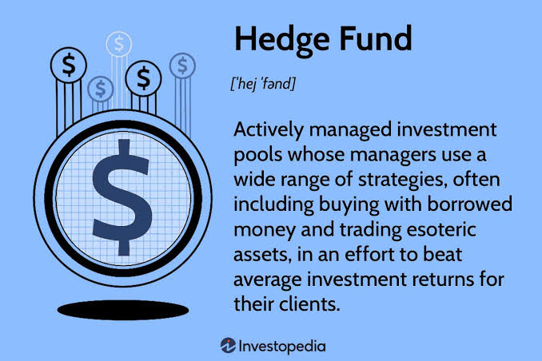

Hedge Funds (HF)
Learn about active investment strategies including Long/Short Equity, Global Macro, Event-Driven, and Quantitative Trading.

Hedge Funds are alternative investment vehicles that employ diverse strategies, long/short equity, event-driven, macro, and quantitative, to generate returns for investors. Hedge funds have more flexibility than traditional asset managers, allowing them to invest across asset classes and use complex strategies.
The role requires deep research capabilities, strong financial modeling skills, and the ability to generate unique investment insights. Hedge fund professionals must be willing to challenge conventional thinking and take bold positions.
Core Functions
Hedge fund professionals raise capital from institutional investors, develop investment strategies, conduct proprietary research, execute trades, and manage risk. They are performance-driven and highly focused on generating returns.
The work involves deep fundamental or quantitative research, developing investment theses, and executing trades in a fast-paced environment. Hedge fund professionals must be comfortable with significant responsibility and accountability for investment performance.
• Capital Raising & Strategy: Securing institutional capital and designing investment mandates.
• Proprietary Research: In-depth fundamental analysis and mathematical quantitative modeling.
• Execution & Risk Control: Fast-paced trade execution with active portfolio risk management.
Common Strategies
• Long/Short Equity: Buying undervalued stocks and shorting overvalued stocks to
generate returns in any market.
• Event-Driven: Investing in companies undergoing transactions—M&A, spin-offs,
bankruptcies.
• Macro: Betting on broad economic trends—interest rates, currencies,
commodities.
• Quantitative: Using algorithms and statistical models to identify trading
opportunities.
Each strategy requires different skills and expertise. Long/short equity requires deep company research. Event-driven requires understanding of corporate transactions. Macro requires knowledge of global economics. Quantitative requires programming and statistical analysis.
• Long/Short Equity: Deep fundamental equity research & bottom-up modeling.
• Event-Driven: Transaction structure analysis (M&A spreads, spin-offs).
• Global Macro: Top-down macroeconomic policy & international currency markets.
• Quantitative: Algorithmic programming, data science & statistical arbitrage.
Career Progression
Research Analyst → Senior Analyst → Portfolio Manager → Partner / CIO.
Promotion is based on investment performance, risk management, and the ability to generate consistent returns.
Portfolio managers make investment decisions and manage overall portfolio risk. Partners and CIOs are responsible for the firm's overall strategy and performance. Compensation is heavily performance-based, with top performers earning substantial sums.
Research Analyst (Data & Thesis Development) ➔ Senior Analyst (Idea
Generation & Position Pitching) ➔ Portfolio Manager (Book Allocation & Risk Management)
➔ Partner / CIO (Firm Strategy & Fund Oversight)
📝 Practice Quiz & Submodule Check
Complete all questions to unlock Submodule 4.6Answer the multiple-choice questions below to test your understanding of Hedge Fund strategies.